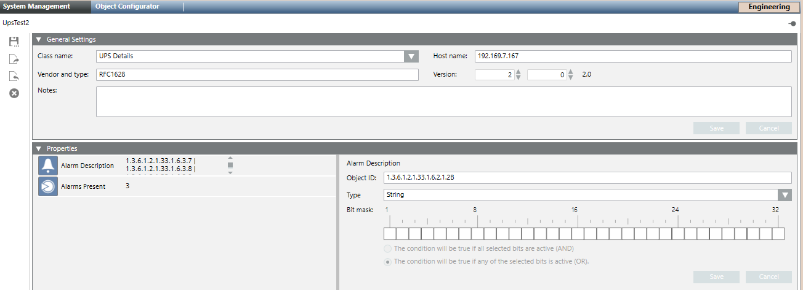

UPS RFC1628 Properties Configuration
The following table lists the properties and the relevant object identifier and type required to properly configure an RFC1628 UPS device manually.
Property | Object ID | Type |
Alarm Description | 1.3.6.1.2.1.33.1.6.2.1.2B | String |
Alarms Present | 1.3.6.1.2.1.33.1.6.1.0 | Uint |
